Transfer data with SURFfilesender¶
Transfer data with SURFfilesender¶
Overview
This is the Transfer Data with SURFfilesender manual, part of Manuals in the A-LIFE RDM GEMs collection.
Supporting materials: SURFfilesender documentation
Authors: Irene Martorelli, Brett Olivier — Last modification: 2026-07-31 — Version: 0.2.0
 Description¶
Description¶
This manual explains how to use SURFfilesender to securely share files — including large datasets — either via email or via an anonymous link. This is particularly useful when you need to share data for review purposes without requiring the recipient to create an account.
Before you start
Not sure what SURFfilesender is or when to use it? See the SURFfilesender tool page for an overview, key features, and typical use cases.
 Simple Steps for Transferring Data with SURFfilesender¶
Simple Steps for Transferring Data with SURFfilesender¶
1. Log in to SURFfilesender¶
- Go to: https://filesender.surf.nl
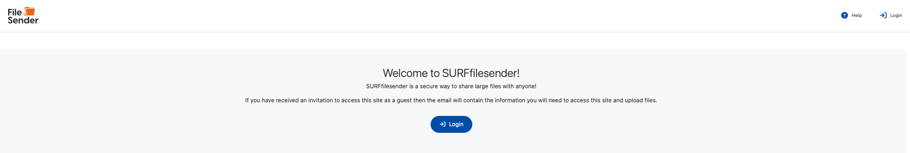
2. Select and access the transfer tool¶
- Select and access the transfer tool using your institutional credentials.
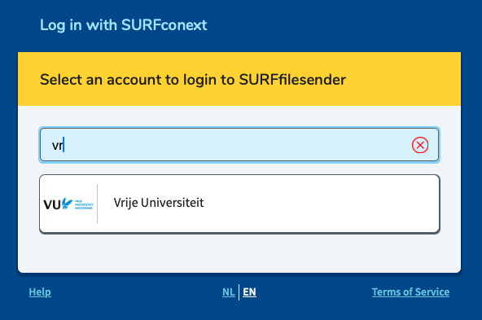
3. Add the files you want to share¶
- Use the friendly browser application to drag and drop your files or folder directly into the interface.
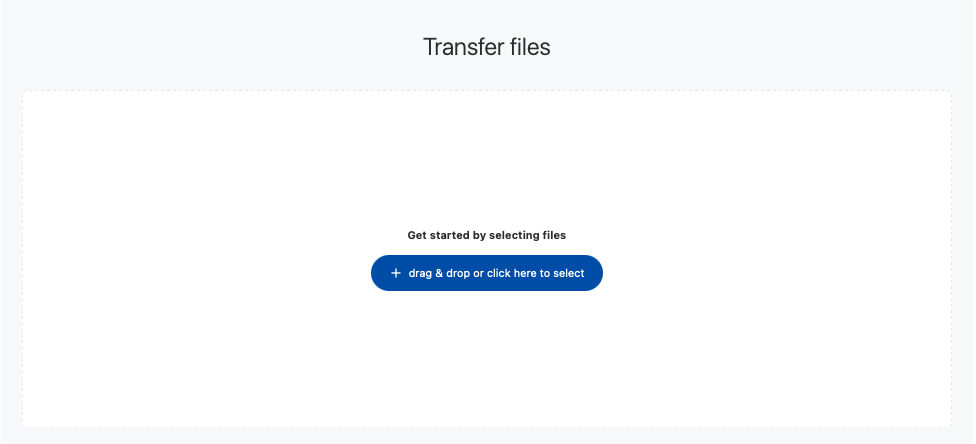
Note
You are only able to make selections of files, not folders — SURFfilesender works file based.
4. Review your uploaded files¶
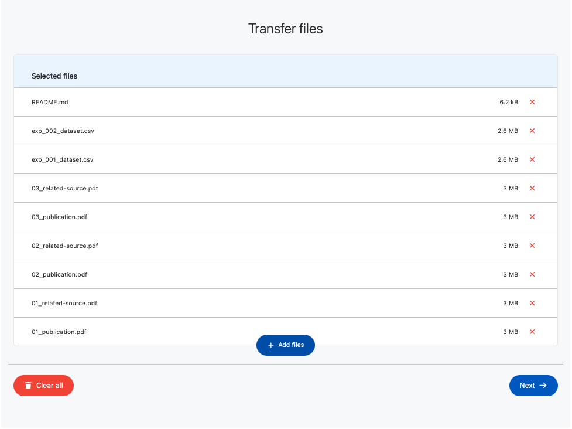
5. Choose your sharing method and settings¶
- Choose between a transfer link or email:
- Transfer link — generates a download link that you can share yourself; you can also protect it with a password.
- Email — sends the download link directly to one or more recipient email addresses.
- Set the expiration date — the default is 2 weeks, with the option to extend up to a maximum of 30 days.
- Select the language for the notification — Dutch or English.
- Click Advanced settings to access additional upload options, such as being notified when the recipient has downloaded the files.
6. Copy the download link¶
- After confirming, your download link is generated — you can use it to share your data.
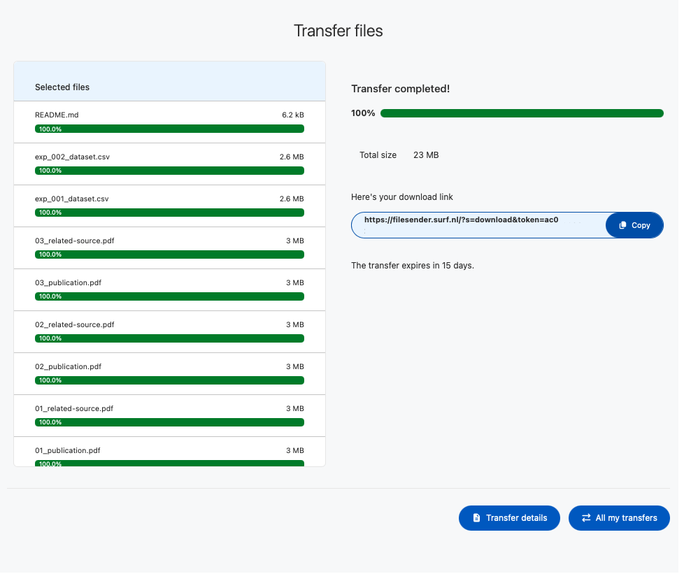
7. Track your transfer¶
- Click on My transfers to check the status of your active and expired transfers. The most recently generated link appears at the top of the list.
- Use the Actions options to manage a transfer — for example, extending the expiration date or sharing the file link via email.
- You can extend the link by 5 days at a time, up to 15 days beyond the default setting.
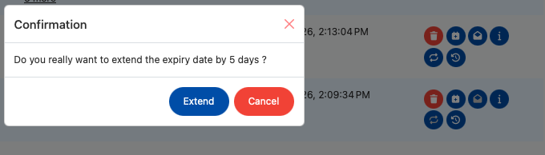
8. Collaborate with other members¶
- If you are collaborating, you can add members to your SURFfilesender space so they can add to and edit the transfer. This is particularly useful when publication data is shared among several authors before being sent to reviewers.
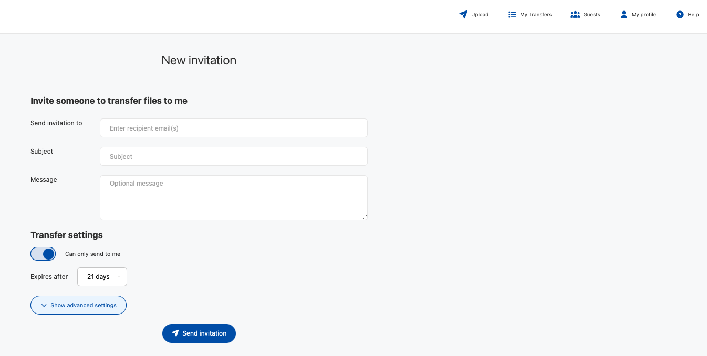
9. Share directly via email¶
- As an alternative, you can share the link directly with a recipient using the Send transfer to option, which shares the folder with them directly.
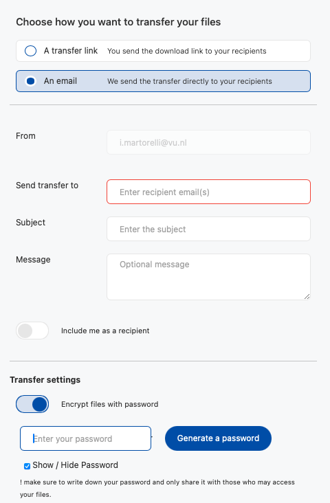
10. What the receiver sees¶
- From the receiver's side, this is how the notification looks:
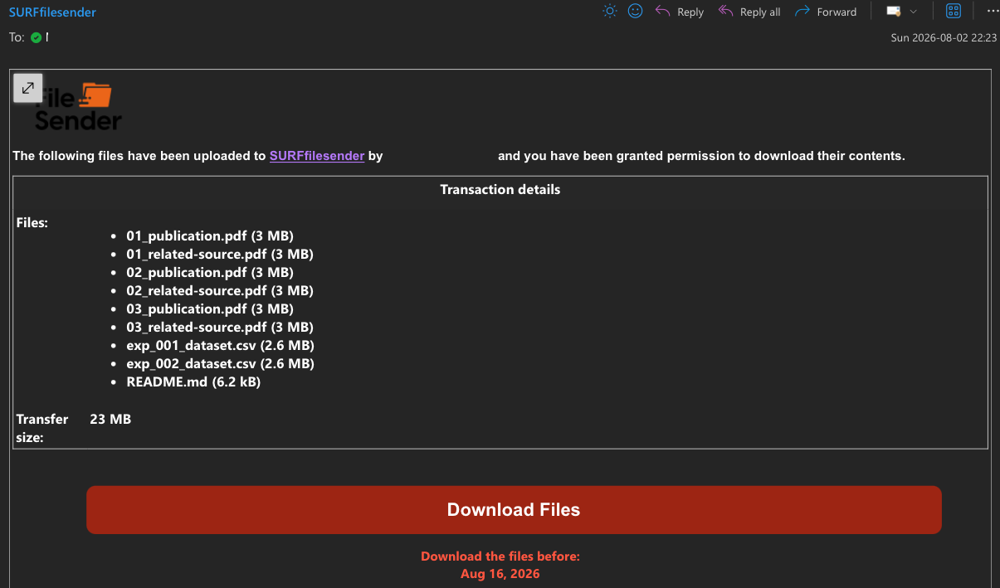
- The receiver will then have access to the shared data folder:
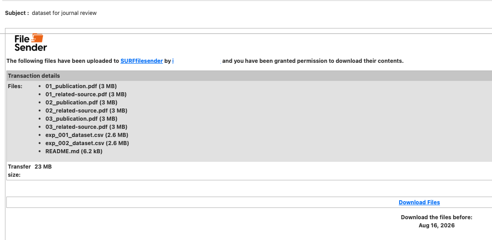
- From there, the receiver is able to download the file folder:
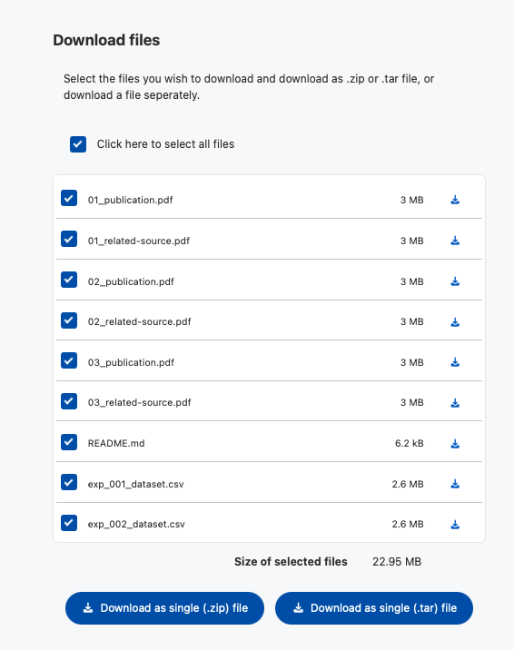
11. Sender notification¶
- The sender will then be notified and can see in the My transfers status that the data has been accessed and downloaded.
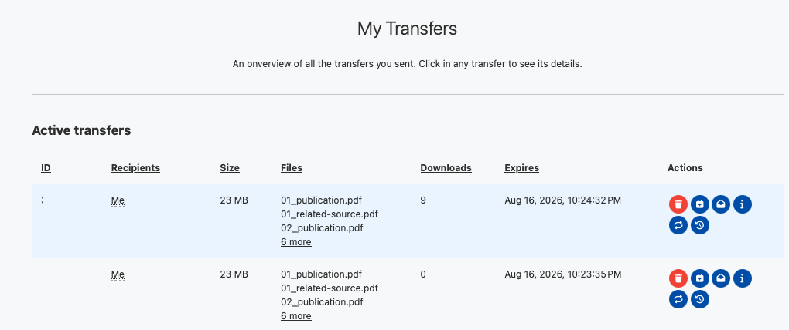